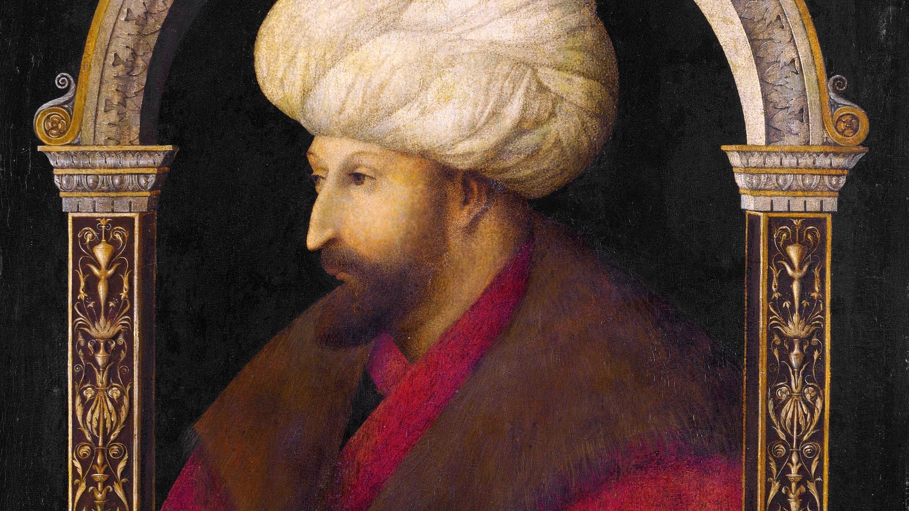

Introduction
Istanbul, formerly known as Byzantium and Constantinople, is a city that has been at the crossroads of civilization for thousands of years. As Turkey's largest city, it is renowned for its rich history, unique cultural heritage, and breathtaking architecture.
The Byzantine Era
Founded around 660 BC as Byzantium, the city became the capital of the Eastern Roman Empire in 330 AD under Emperor Constantine the Great. Renamed Constantinople, it flourished as a major center of trade, culture, and religion throughout the Byzantine period.
The Hagia Sophia, constructed in 537 AD, stands as a testament to the architectural ingenuity of this era. It served as a cathedral for centuries, symbolizing the city’s significance in Christian history.
The Ottoman Era
In 1453, the city was conquered by Sultan Mehmed II, marking the beginning of its transformation into the capital of the Ottoman Empire. Renamed Istanbul, it became a hub of Islamic art, culture, and governance.
Iconic structures such as the Blue Mosque, Topkapi Palace, and the Grand Bazaar were built during this period, adding to Istanbul's architectural splendor. The city thrived as a melting pot of various cultures and traditions.
Modern Istanbul
After the establishment of the Republic of Turkey in 1923, Istanbul remained the country's cultural and economic epicenter. It continues to blend its historical roots with modernity, attracting millions of visitors each year.
Today, Istanbul is a vibrant metropolis where ancient landmarks coexist with contemporary developments. The city’s unique position, straddling both Europe and Asia, makes it a symbol of unity and diversity.